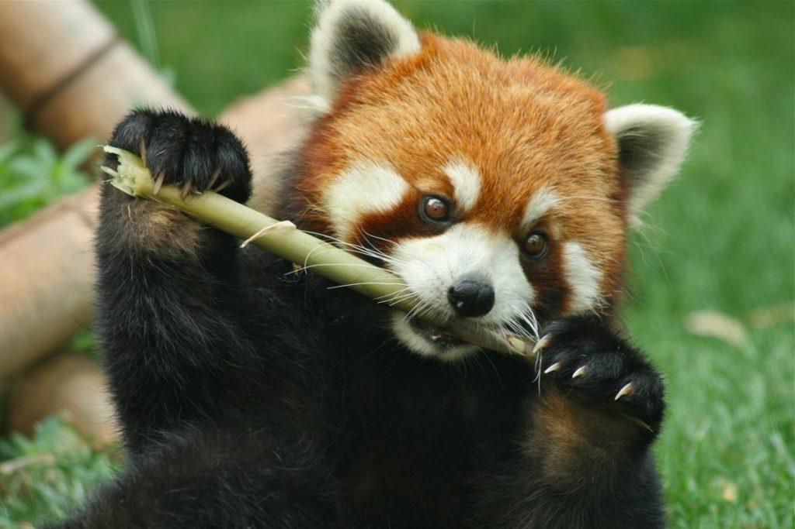
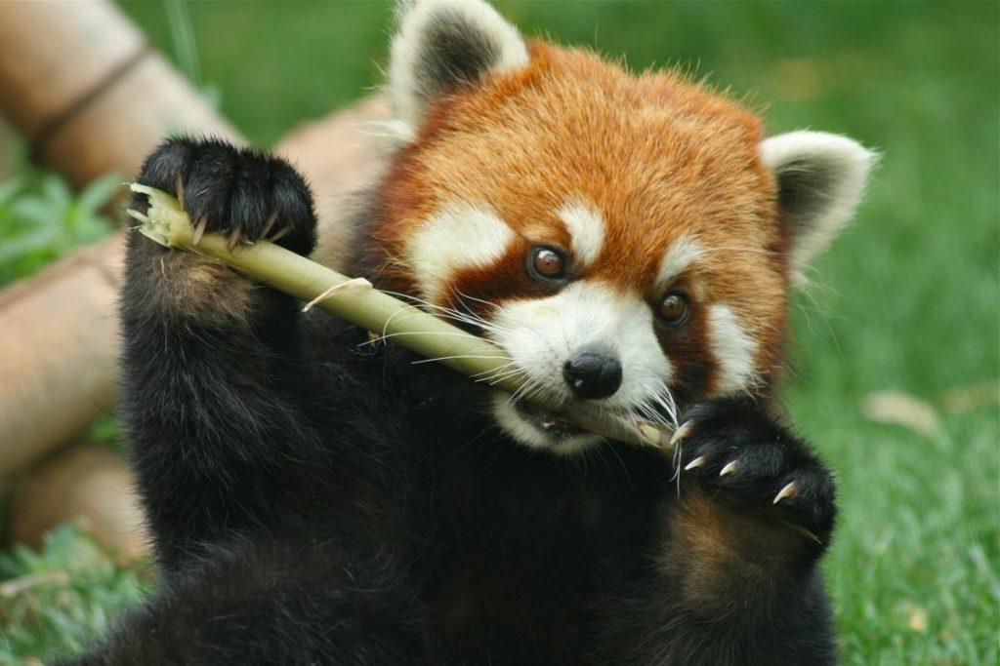

Akron Zoo
Red Panda Conservation
The red panda is one of the most fascinating and endangered animals in the world. Native to the temperate forsts of the Himilayas and southwestern China, these charming creatures are known for their striking reddish-brown fur and bushy ringed tails. The Akron Zoo is proud too be part of the conservation effort to protect this incredible species through the Association of Zoos and Aquariums (AZA) Species Survival Plan.
 

Fun Facts About Red Pandas
- Red Pandas are about the size of a large house cat
- They spend most of their time in trees and are excellent climbers
- Their diet is almost entirely bamboo, though they also eat berries and insects
- Red pandas were discovered about 50 years before giant pandas
- Endangered species
Plan Your Visit
- The Akron Zoo is open from 11 AM to 4 PM
- Red pandas can be found in the Wild Asia exhibit
- Guided tours are available on weekends
- Membership includes free admission all year